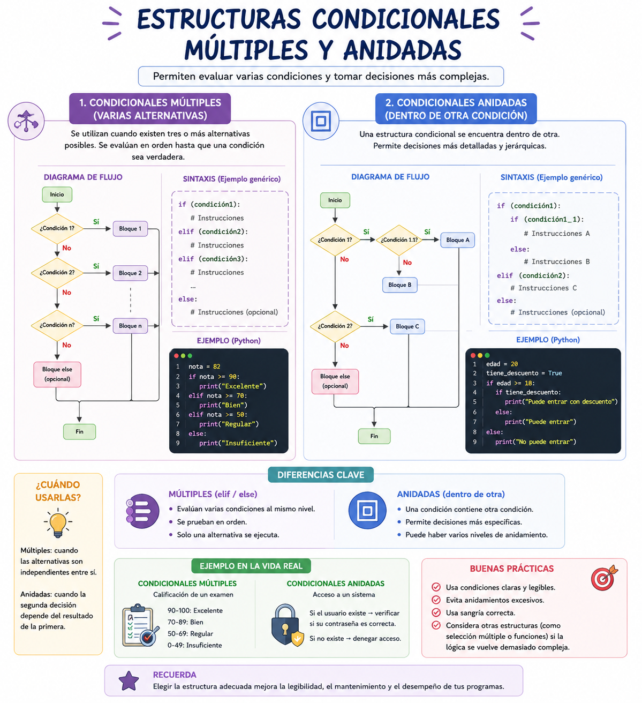

Piensa en un videojuego donde controlas la dirección de tu personaje usando un control. Si presionas arriba, se mueve al norte; si presionas abajo, al sur; si presionas izquierda, al oeste; y si presionas derecha, al este. Evaluar esto con condicionales simples obligaría a la máquina a procesar preguntas innecesarias. Para optimizar el rendimiento cuando hay múltiples alternativas posibles excluyentes, los programadores anidan estructuras o implementan selectores múltiples.
⚠️ Debes visualizar el video completo sin adelantar para desbloquear la evaluación.
Material audiovisual adaptado con fines estrictamente educativos. Créditos del autor: Charly Cimino.

Cuando un problem lógico presenta más de dos opciones de solución mutuamente excluyentes, las estructuras condicionales simples o compuestas resultan insuficientes o ineficientes por sí solas, haciendo necesario el uso de la anidación o de selectores dedicados.
¿Qué es técnicamente una condicional anidada en el paradigma de la programación estructurada?
¿Cuándo es académicamente más recomendable utilizar una estructura de Selección Múltiple (`Según Sea` / `Switch`) en lugar de condicionales anidadas?
De acuerdo con Sznajdleder (2012), ¿qué nos permite realizar el anidamiento de condicionales?
¿Cuál es el principal beneficio de rendimiento de una estructura "Según Sea" (Switch) en comparación con múltiples condicionales independientes?
En el ejemplo del control del personaje de un videojuego, ¿por qué es ineficiente usar condicionales simples consecutivas?
¿Qué tipos de datos evalúa preferentemente una variable selectora en una estructura de selección múltiple según el texto?
¿Cuándo se determina que las opciones de solución de un algoritmo son "mutuamente excluyentes"?
Si un problema lógico presenta más de dos opciones de solución mutuamente excluyentes, ¿qué ocurre con las condicionales simples o compuestas por sí solas?
¿Qué término define la acción de incrustar una estructura de decisión completa dentro de otra previamente abierta?
En una estructura `Según Sea`, la variable que define el rumbo del flujo lógico se denomina académicamente como: